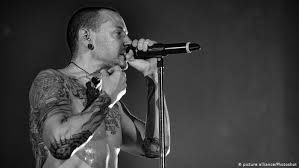
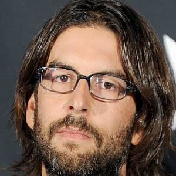

My favorite band
Linkin Park
Band's overview
Linkin Park is rooted at the crossroads of aggressive metal and beat-driven hip-hop, Linkin Park became one of the most successful acts of the early 21st century by incorporating elements from across genres, injecting hardcore rap, raucous punk, atmospheric electronic, and even polished pop stylings into their music. Despite being burdened with the oft-derided nu-metal and rap-rock genre designations, they soon evolved beyond those associations into a more complex beast. Indeed, as their original band name and debut album title suggested, they were a hybrid of forces, relying as much on the vocal interplay between singer Chester Bennington and rapper Mike Shinoda as on the band's muscled instrumentation, which layered DJ Hahn's effects atop heavy, processed guitars and pounding percussion. source
Members
- Chester Bennington
- Mike Shinoda
- Joe Hahn
- Rob Bourdon
Chester Bennington
Chester Charles Bennington (March 20, 1976 – July 20, 2017) was an American singer, songwriter, and occasional actor. He was best known as the lead vocalist of Linkin Park. He was also lead vocalist of the bands Grey Daze, Dead by Sunrise and, between 2013 and 2015, Stone Temple Pilots.
Mike Shinoda

Michael Kenji Shinoda (Shinoda Kenji), born February 11, 1977) is an American musician, rapper, singer, songwriter, record producer, and graphic designer. He co-founded Linkin Park in 1996 and is the band's lead vocalist, as well as rhythm guitarist, keyboardist, primary songwriter and producer.
Joe Hahn

Joseph Hahn (born March 15, 1977) is an American musician, DJ, director and visual artist best known as the DJ of the American rock band Linkin Park, doing the scratching, turntables, sampling, and programming for all seven of Linkin Park's albums.
Rob Bourdon
Robert Gregory Bourdon (born January 20, 1979) is an American musician, best known as the drummer and co-founding member of the American rock band Linkin Park. The youngest member of the band, Bourdon met Aerosmith drummer Joey Kramer, and was inspired to learn how to play the drums.
Favorite songs
- In the End
- Numb ft Jay-Z
- Breaking the habit
- Somewhere I belong
- A thousand Suns: The full experience
- Riff Raff
- Stef
- Shadow of the day
- They come for me
- Burning in the sky
- Runaway
Favorite albums
- One more light
- Hybrid Theory
- Meteora
- Minutes to midnight
- A thousand sons
- Living things
- The hunting party